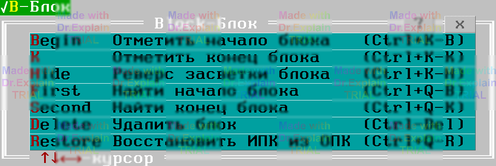
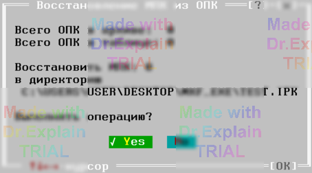

4. Меню Block окна архива ПК
В меню Block собраны все операции, выполняемые над выделенным блоком строк в таблице архива. «Горячие» клавиши подобраны так же, как в текстовом редакторе ПОАСК ([11, п. 12]).

4.1 Block / Begin
Ставит метку начала блока. Если метка конца стоит ниже — строки между ними подсвечиваются. Ctrl + Shift + B или Ctrl + K B.
4.2 Block / K
Ставит метку конца блока. Подсветка появится, если метка начала выше. Ctrl + Shift + K или Ctrl + K K.
4.3 Block / Hide
Включает/выключает подсветку при сохранённых метках. Полезно, когда заливка мешает работе. Автоматически выключается при изменении таблицы. Ctrl + Shift + H или Ctrl + K H.
4.4 Block / First
Переход к метке начала блока, независимо от подсветки. Ctrl + Q B.
4.5 Block / Second
Переход к метке конца блока. Ctrl + Q K.
4.6 Block / Delete
Удаляет подсвечённый блок записей и соответствующие файлы ОПК из архива (с подтверждением). Ctrl + Del или Ctrl + K Y. Отмены нет — действуйте осторожно!
4.7 Block / Restore
Восстанавливает исходные ИПК из файлов ОПК:
- только из подсвечённого блока, если он корректен;
- иначе — из всех видимых в таблице ОПК (учитывается текущая селекция).
Ctrl + Q R.

В диалоге отображается:
- Всего ОПК в архиве: Q — полное количество файлов;
- Всего ОПК в таблице: M — учитывая селекцию;
- Восстановить ИПК: M — сколько будет извлечено;
- в директорию PATH — путь создаётся автоматически, имя директории архива + расширение «.IPK».